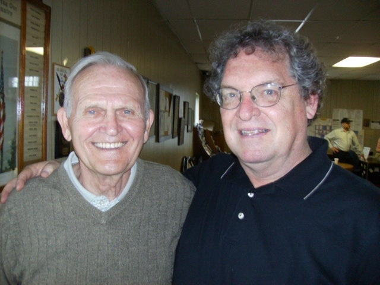
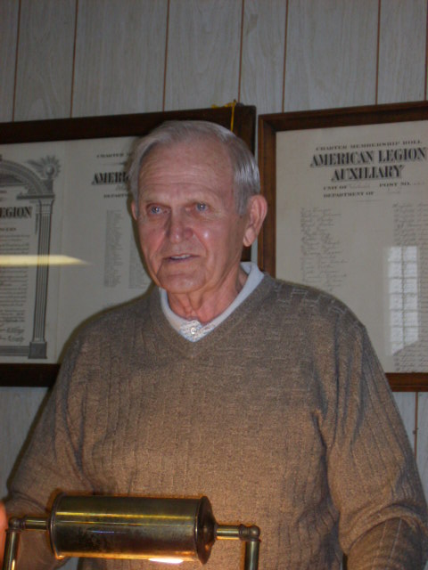

One
blissful, decades-spanning Sunday afternoon in Winfield's Legion Hall
Special to the
Winfield Beacon by John Busbee

Bob Lindell
and John Busbee
Scroll down for another photo.
April 26, 2010 It's been a few years since I tromped the hallowed halls of Winfield-Mt. Union High School, let alone the woods, hills and waterways of southeastern Iowa as a Boy Scout. But, after hitting my mental "refresh" command, Sunday's celebration created a rush of memories. To adapt the oft-heard saying, "You can take the boy out of the hometown, but you can't take the hometown out of the boy." For that, I am continually grateful.
Bob Lindell has been an active community fixture in Winfield for some time. Sorry; fixture isn't appropriate or respectful. That sounds like some weathered plumbing or lighting embellishment. Tour de force might better describe Bob.
Bob's contributions making Winfield a better community cover a broad range, but one of his proudest legacies is the work he did with Winfield's Boy Scout Troop 21. Sunday's gathering at the Winfield Veterans Building celebrated the release of his historical and anecdotal book, "Troop 21: Scouting history, activities and memories." Bob and researcher, Bill Klopfenstein, invested hours of joyous time in collecting the bounty of information contained in this book. Joyous, as I can only imagine the chuckling and reminiscences this process evoked. I further believe that many of the saucier stories may not have found their way into this tome. But just ask the leaders or scouts involved for their versions…or, better yet, their defenses. Thanks to editing support from former scouts, Merrill Crawford (now of Dubuque) and Jim Chrisinger (now of St. Paul, MN), this book covers one of Winfield's legacy bricks upon which the community's growth continues to build.
My parents, Letitia and Lauren Cory, long-time friends of Bob and Naomi, joined me this day. Letitia and Bob were classmates in Winfield. My former classmate, Pat Fricke, was part of the vanguard serving up delicious cookies, cookie bars and beverages. Jim Chrisinger, Merrill Crawford and Mark Underwood were some of the initial scouting friends I recognized and chatted with. I failed further testing of my memory, however, as more and more past scouting friends I didn't recognize appeared. I thank them for their gracious understanding as they recognized me (I believe they were tipped off by my mother - not fair!), but whom I didn't recognize. The pre- and post-presentation buzz of remembrance-laced conversation was fierce as the Veterans Hall quickly filled.
My three-summer pilgrimage to Camp Eastman, a highlight of my scout career, began in 1964. The blur of merit badges, horses, rifle range, camp fire ghost stories and sing-a-longs, and more were unwound thanks to Bob's book. Timelines were set; fellow campers were identified. From the fertile text of this memoir of Troop 21 sprouted a bounty of boyhood reflections. For me, this book became an instant touchstone to a vitally important part of my youth.
Bob instills his understated sense of humor in the stories he writes, flavoring many with the little life's lessons that were the foundation upon which he dedicated himself for his scouts. As I read the stories, I could hear Bob's voice, bringing each historical moment and episode to a more colorful life than simple black and white words on a page. Each entry serves as a springboard from which past participants could add their own personal points of view, spinning off onto tangents of warm reflection. Through this reflection, through learning about other Troop 21 experiences and history, I learned even more about myself. This special book release party helped me gain an even greater appreciation for the character-strengthening lessons scouting provided.
Bob's presentation was most assuredly the headline act of the day. With an honesty and respect one expected, Bob quickly immersed himself into the history of Troop 21, dating back to 1913. He told of the troop's inaugural major project: a hike to Keokuk to see the new dam. That initial adventure unknowingly positioned Troop 21 to be part of history. Bill and Bob's research connected Troop 21 with an important pending centennial celebration, as the troop has been asked to participate in Keokuk's plans to celebrate the dam's centennial birthday in 2013.
Barely referring to carefully detailed notes, he painted a picture of the importance of Winfield's scouting legacy. As his narrative moved through the early decades up to his involvement with Troop 21, he slowly shifted into a more personal, more reflective tone. He balanced his stories between humorous and serious, sometimes infusing a story with both. Such was the case when he and another leader were assigned to watch the perimeter at Camp Eastman during a potentially dangerous storm, with instructions to send the scouts to the stone lodge if the situation became more threatening. Once at their exposed positions, Bob quickly commented to his fellow scout leader that those in charge neglected to account for their safety!
Several of the scouts who were the subjects of stories were present, and Bob didn't let the chance for a veiled "you should have known better" innuendo pass. Everyone alternately listened intently or loudly responded, and the hall was often filled with the shared laughter of a community appreciating the "it takes a village" understanding that Bob channeled so well.
Towards the end of the presentation, which earned the standing ovation it received, Bob took time to recognize past scouts, leaders, scout mothers and others who were truly woven into this legacy. Even the current third grade Cub Scout troop was presented by its den mother. Throughout Bob's heartfelt presentation, he often smiled, he often reflected, and, yes, there were times when the intense care and passion he held for his caretaker role with Troop 21 visibly showed on his face. That is why Bob was so successful with his scouting leadership. He understood the importance of the troop, the tribe that bonded through ever-shifting dynamics, but always had a rock-solid foundation upon which to grow. And, that's a lesson that many former scouts fully appreciated later in life, as Jim Chrisinger so eloquently commented on after the presentation. The crowd enthusiastically agreed with Jim's observations.
Bob's closing quote gave everyone something to take home. "May I leave you with this thought!! Yesterday is a sacred room in your heart where you keep your memories. Hear your cherished laughter from another day. You feel the warmth of a hug from an old friend. From your yesterdays you draw from life's lessons and encouragement to pass along to others. It is my hope that you may store some special memories to be placed in your sacred room and draw upon them to help guide you through some of life's unexpected challenges that you may face."
In the end, this was a special moment for a town in celebrating its being, its purpose. On this day, Bob Lindell was the torch bearer, as we all gathered in communal appreciation. This rite needs to happen regularly to keep a community in touch with its identity, and Winfield understands the importance of these special events.
If you haven't done so, get your copy of the Troop 21 book. If you have a son, or grandson, or anyone connected with this vibrant chapter in Winfield's history, send him a copy. All proceeds support the Winfield Historical Society, which is doing an excellent job in fulfilling its role as the focal point for capturing the stories, history and legacy of this vibrant SE Iowa community.
If there are missing names, or references I would have gotten had I still lived in Winfield, please be forgiving. I will forever, as I always have, carry my memories of growing up in Winfield, and having been a part of the Troop 21 legacy, with me. This part of my upbringing continues to fuel who I am, and always will.John Busbee, W-MU Class of 1969, is a freelance writer and critic and works in the film production industry, including his recent work as Locations Manager for the feature filmed in SW Iowa, The Crazies. He produces a weekly arts & culture radio program as part of The Culture Buzz cultural media network, where he shares insights about Iowa's arts, culture, literature, history & entertainment. He served as the Senior Feature Writer/Editor for ArtScene Magazine, and is a regular contributor to DSM Magazine. He lives in Clive, Iowa, with his wife, Kimberly, and their daughter, Kaitlyn, a junior at the University of Iowa. He can be reached at John@TheCultureBuzz.com.
